Clio is a software for lawyers to manage their business, including their clients, documents, matters, and payments. There's two products: Clio Grow, which is used for intake, and Clio Manage, which is used for all client and case management post-intake.
Clio acquired Lexicata in October 2018, rebranded it as Clio Grow, and relaunched it in January 2019 as part of the Clio Suite. Despite the Suite product positioning, Grow and Manage still function as two integrated but separate applications, each with their own database. The current contacts experience does not meet customer expectations, resulting in being Clio Grow’s top requested feature with 214 votes. 30% of all the NPS’ detractors are related to dissatisfaction with Grow/Manage integration, which ultimately led to reduced MRR and higher account churn with an estimated impact of over $40,000 USD a month. Our goal is to unify the contacts across both platforms so that they automatically sync - the first step to more complete product unification.
I began by mapping out all the fields and interfaces involving contacts in both products.
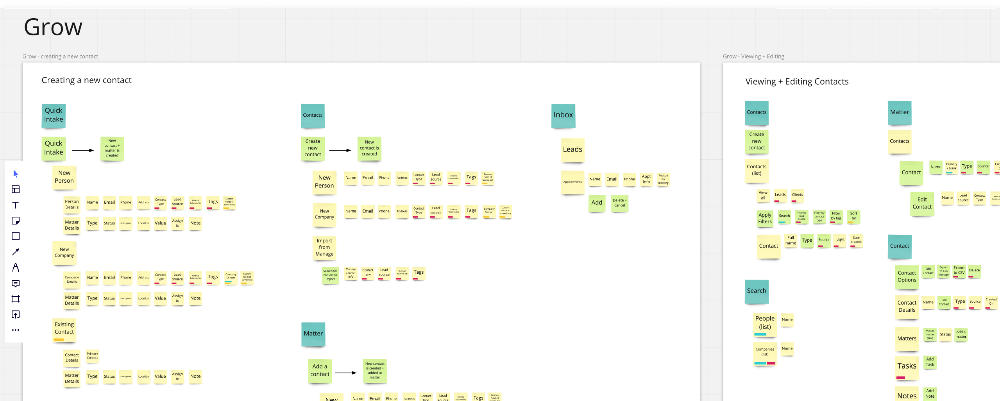Key research questions to answer:
Based on user research, we came up with the following problem statement.
Today, contacts in Grow and Manage are stored separately and are not automatically synced with one another. Suite customers can’t rely on Clio as a single “source of truth” for their contact & matter data and they are constantly struggling to keep their firm’s contact data accurate, complete, and up-to-date. There are two primary problems related to contact synchronization that is preventing our customers from navigating through their contacts efficiently across Grow and Manage:
The current synchronization is not bi-directional, meaning any contact updates on either Grow or Manage will not be reflected in the other system until a manual export action is taken place. Manual processes are required to ensure contact data is accurate and up to date.
Duplicate contact records with outdated information are often being created because users are unaware when a contact already exists in the other product. Duplicated contacts could lead to errors and incomplete information when our users are working through a matter.
I mapped out each interviewed firm's workflow, and then created an ideal workflow.
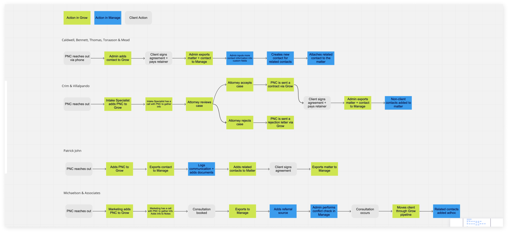 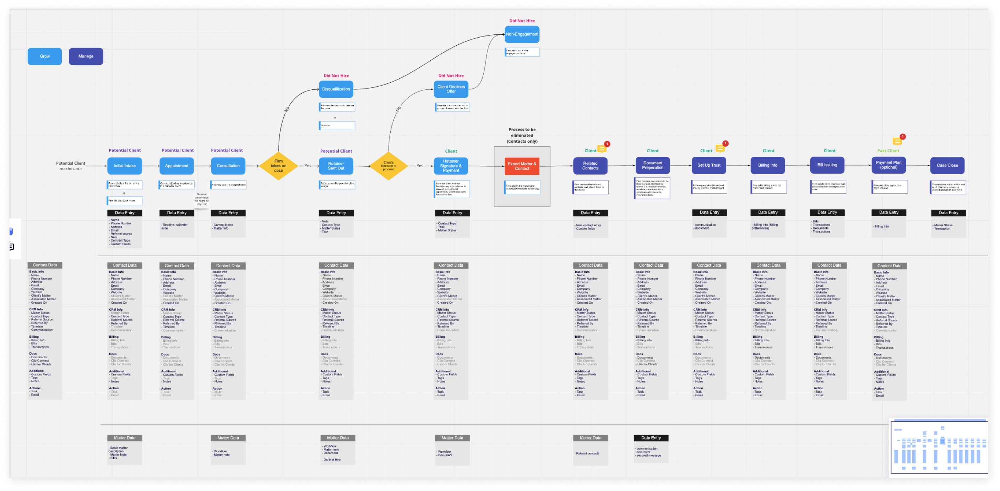I went through all the existing contact interfaces and added comments on how to improve.
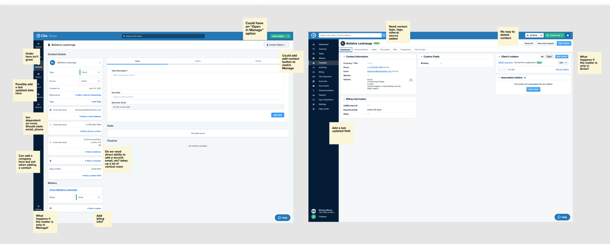I created several variations and opened them up to async feedback from the design team.
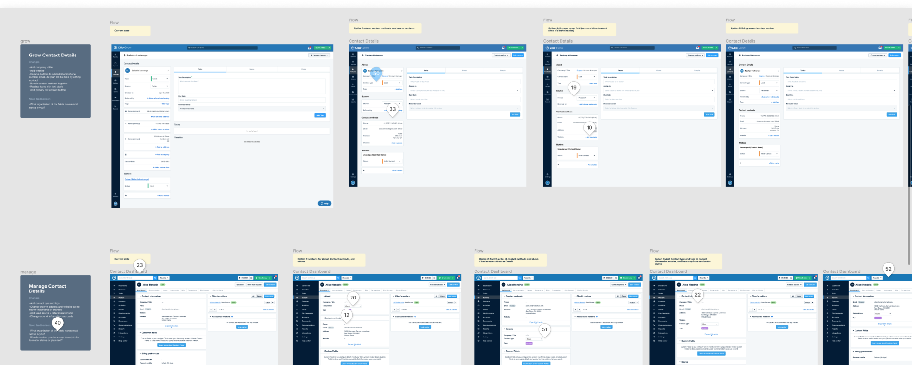In Manage, I updated the contact creation form to be more streamlined, and added the fields that were unique to Grow.
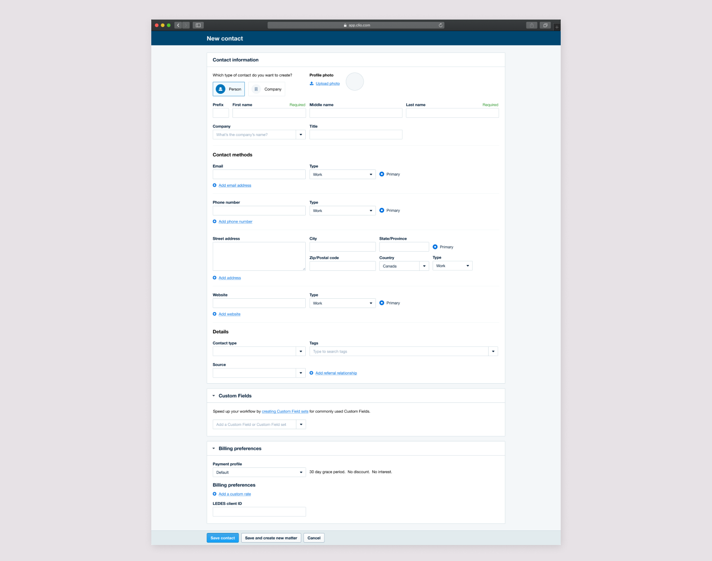In Grow, I updated the creation form to follow the same order and a similar format to Manage, to ensure contact creation was similar throughout both products. I also removed the contact import from Manage functionality.
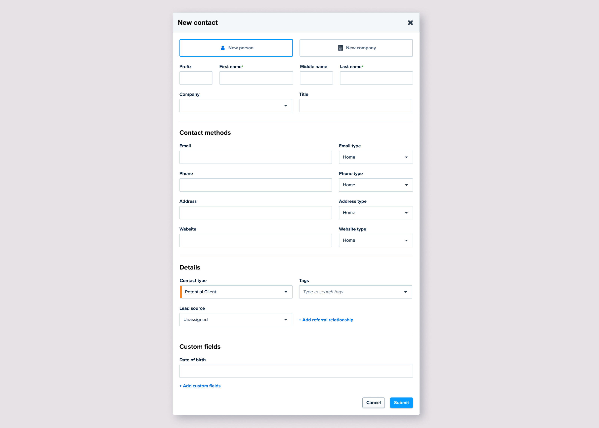I updated the contact lists to show consistent information in a consistent layout, while still retaining the design patterns of each product.
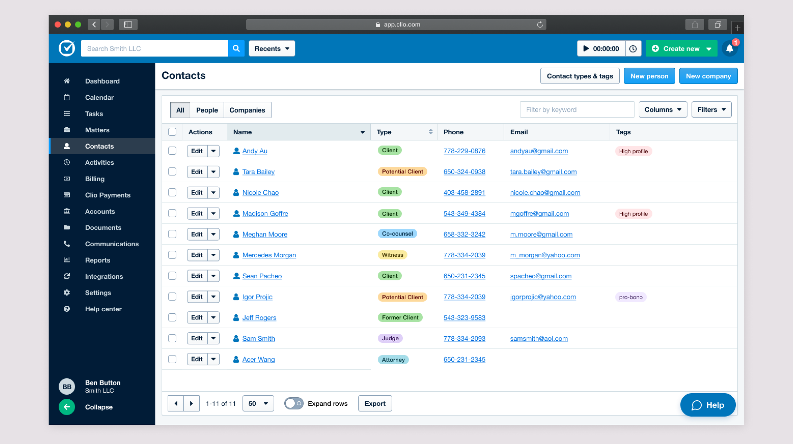 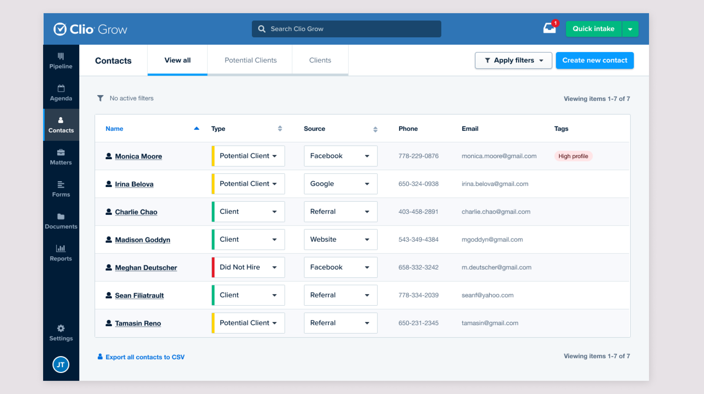I updated the contact information to be consistent across products, while recognizing that the tasks performed in each product are different.
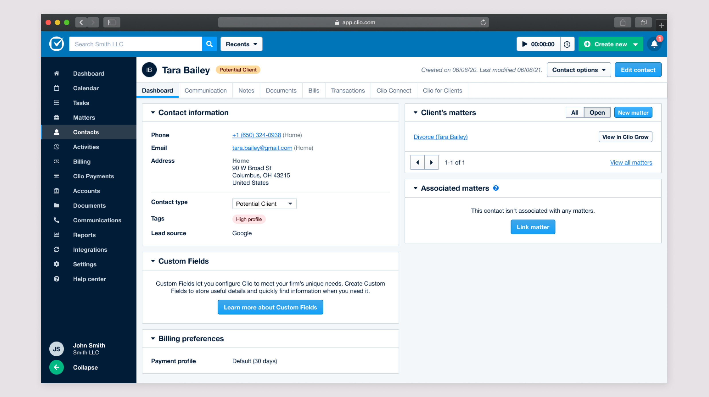 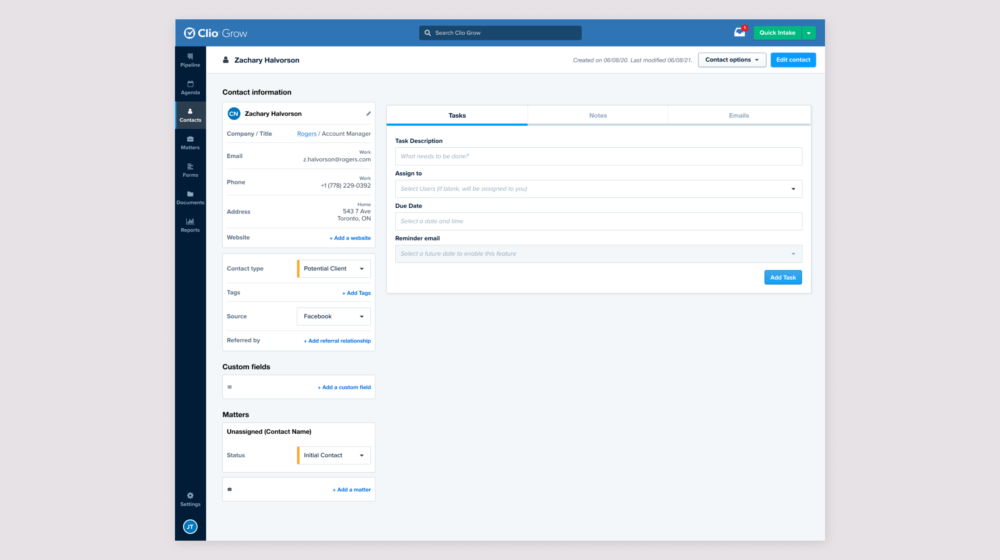I tested the designs out with users and analysed the results using affinity mapping.
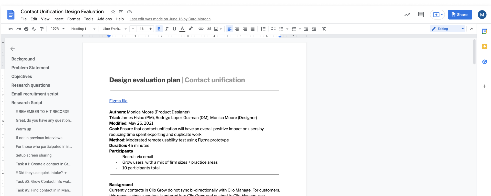We learned a lot, and here are the key findings.
Users were confused about the difference between contact types and tags, which are labels already being used in Clio Grow. I decided to explore different ways we can group and label contacts, and landed on having one labelling system called Labels. We could have some preset labels, automatic labelling, and allow users to customize.
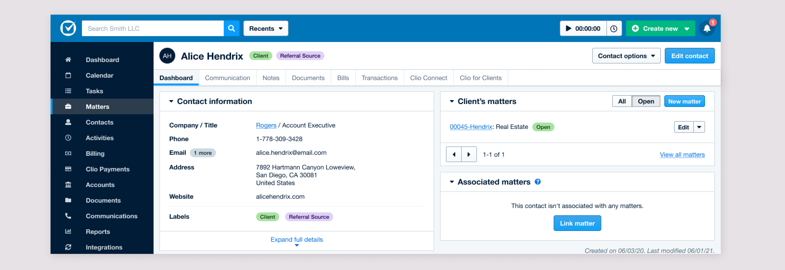Users were concerned that prospective clients that didn't move forward with them would clutter their Clio Manage contacts, since these contacts are currently just in Grow. I experimented with different ways to filter out contact types in order to address this concern.
I worked with the PM and Engineering Manager to prioritize the various aspects of the project.
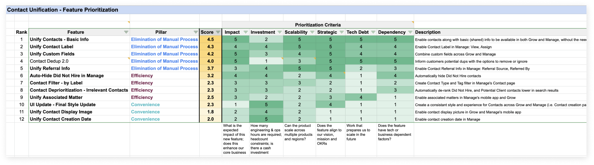We decided to break the project into 3 phases, while also simultanously working on a way to merge duplicate contacts, since it was discovered that duplicate contacts would be a big issue if not addressed.
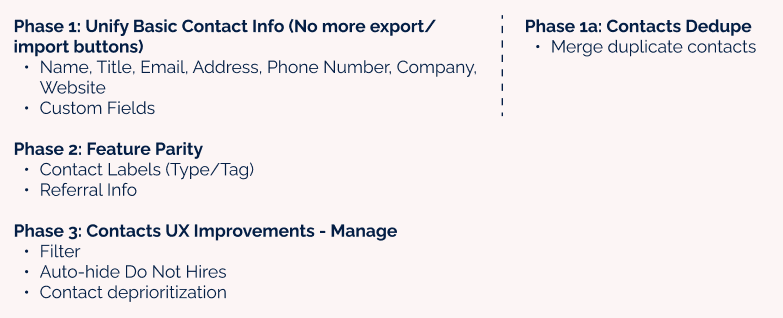We knew that we'd need to build the ability to merge duplicate contacts, as unifying the contacts across Manage and Grow would likely create a lot of duplicates. At the same time, we discovered a bug that had created a lot of duplicates for customers. So, we needed to create a deduplication tool, that could be a stepping stone to merging contacts when they're unified.
We initially considered having a UI where users could review the duplicates. However, this would be a lot of work to build, and we wanted to fix the duplication issue for users as quickly as possible.
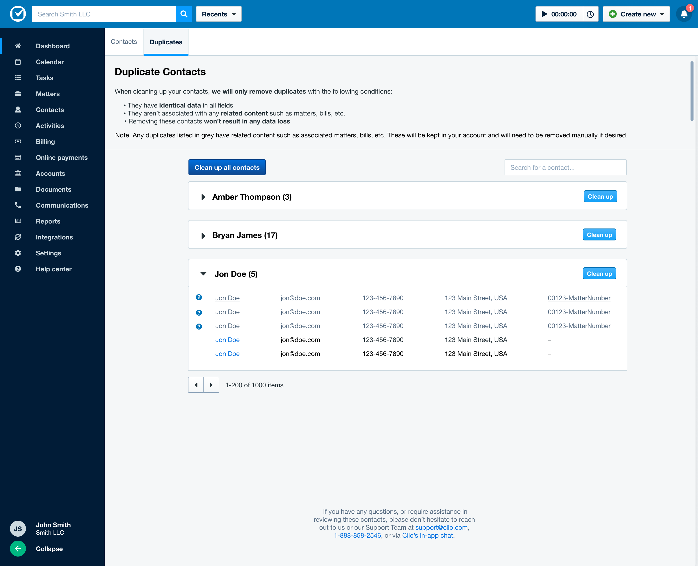As an MVP, we decided to build an automated process that would remove identical duplicates. While this wouldn't merge unidentical duplicates, it would fix the majority of the duplicates that were created by the bug. If needed later, we can expand to create a more robust tool.
Users would receive an email notifying them that duplicate contacts had been found in their account with a CTA to clean them up.
They would then be brought to Clio Manage, and can initiate the process. If they wish to review the duplicate contacts, they can download a csv.
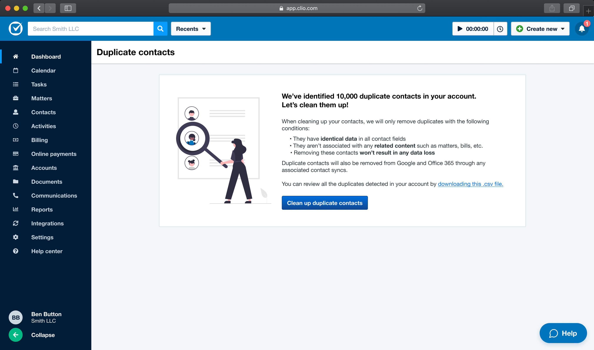Removing duplicates can take awhile, so there's a page telling them that the process is underway, and they can leave the page.
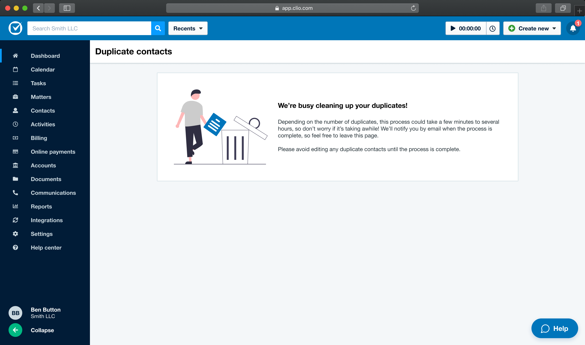Lastly, they receive an email confirming that the duplicates were successfully removed.